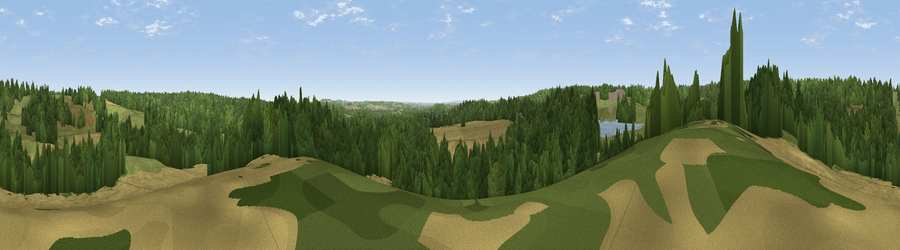

Viewpoint near Newstead
#28460 in England · top 36% of its area beats it · near Newstead · access?Where it is
The exact computed spot (SK 52975 54125). Click the marker for map links.
Public access: no public right of way or access land is recorded at this exact spot — it may be on private land. Computed from Natural England's CRoW access layer and OpenStreetMap rights of way — not the legal definitive map. Always verify locally.
The view, rendered

A 360° render of this exact spot computed from the terrain model, tree cover and land cover — summer colours, afternoon light, calibrated against photographs of famous viewpoints. Real trees, hedges and buildings will differ in detail.
The panorama
Grey silhouette: terrain skyline in each direction (720 bearings, Earth curvature and refraction included). Dashed green: skyline with trees (+15 m) and buildings (+8 m) as obstacles. Blue strip: how far the ground is visible on each bearing.
Where the view opens
Wedge length = distance to the farthest visible ground on that bearing (vegetation-aware). Rings at 10, 25 and 50 km.
What fills the view
49% woodland · 27% cropland · 22% grassland · 1% water ·
Angular shares of the visible panorama (visual magnitude), not map area. Landscape diversity 0.50 (0–1 Shannon).
Key numbers
More beautiful places nearby
The staircase of upgrades: each row has a higher view potential than everything closer. Driving times are estimates from straight-line distance, calibrated against real road routing — check an actual route before setting out.
| Place | Direction | Drive | Score |
|---|---|---|---|
| Viewpoint near Newstead | SW · 3 km | ~7 min | 53.4 |
| Viewpoint near Greasley | SSW · 7 km | ~15 min | 56.2 |
| Viewpoint near Arnold | SE · 10 km | ~19 min | 64.1 |
| Viewpoint near Meden Vale | NNE · 17 km | ~29 min | 65.2 |
| Burstheart Hill [Thoresby Colliery] | NE · 17 km | ~30 min | 69.3 |
| Crich Stand | W · 19 km | ~32 min | 73.0 |
| Alport Height | W · 23 km | ~37 min | 73.9 |
| Tissington Hill | W · 38 km | ~57 min | 75.5 |
53.08173, -1.21060 · source: screening · position refined by local search. Computed location — check access rights before visiting.